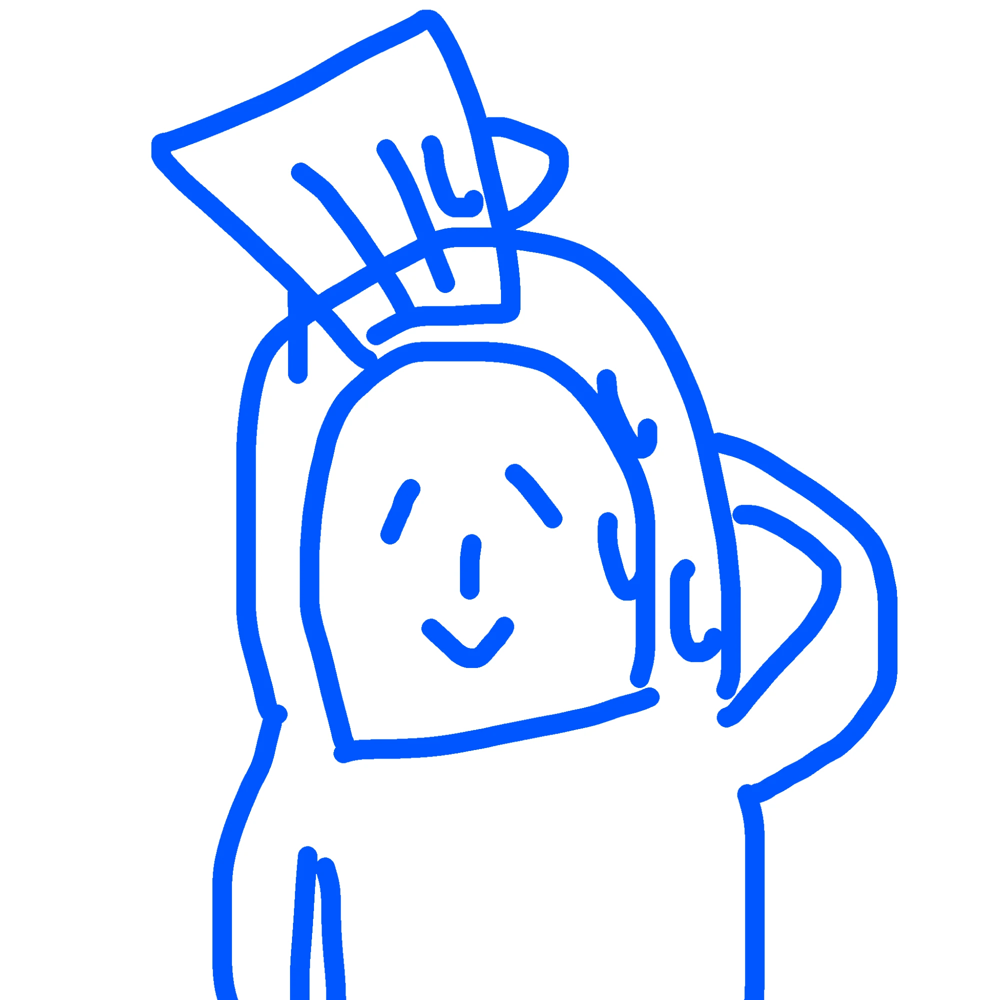

代表あいさつ

はじめまして。ぼくは タクアリヌス。このホームページの看板係です（自称です。だれにも頼まれていません）。
このたびは「タクアンの島」へ、ようこそおいでくださいました。島といっても、ここには海も砂浜もありません。あるのは絵と GIF とゲームと実況です。泳ぎたい方は、お近くの海をご利用ください。
頭のモヒカンは青と水色のしましまで、毎朝 3 時間かけて立てています。……というのはうそで、生まれつきです。寝ぐせでちょっと曲がる日もありますが、それはそれで味だと思っています。
当サイトでは、以下のお約束をお願いしております。
- 絵はゆっくり見ること。早く見ても絵は増えません。
- キリ番を踏んだら、ひとりで喜ばずに教えること。ぼくもいっしょに喜びます。
- モヒカンにさわらないこと。崩れます。
- ゲームでぼくを崖から落とさないこと。落ちても平気ですが、気持ちの問題です。
- 「工事中」の看板の向こうは、のぞかないこと。何もありません。ほんとうに何もありません。
| 名前 | タクアリヌス |
|---|---|
| 住所 | モヒカンの島（地図にはのっていません） |
| 色 | 体は青。輪郭は濃い青。顔の窓は白。 |
| 目 | 点がふたつ。小さいですが、ちゃんと見えています。あなたのことも見えています。 |
| 好きなもの | モヒカン、しましま、来てくれたあなた |
| 好きな食べ物 | たくあん（名前が似ているので親近感があります） |
| 苦手なもの | 強い風（モヒカンが倒れる）、帽子（モヒカンが入らない） |
| 特技 | 館の絵に飛び込むこと。番長とミニゲームで勝負すること。 |
| 出ている作品 | タクアリヌスとモヒカンの島（ブラウザで遊べます。ぼくが主役です） |
それでは、どうぞごゆっくりしていってください。帰るときはブラウザの「戻る」を押してください。押さなくても帰れます。また来てね。
2026年11月17日
タクアンの島 看板係（自称）
タクアリヌス